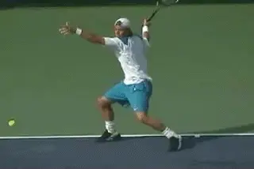
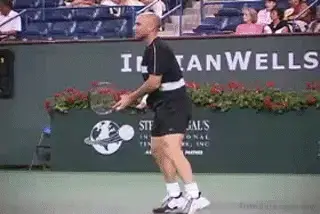
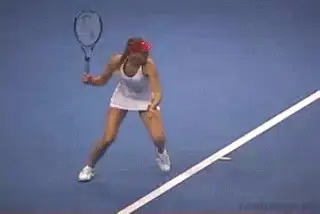
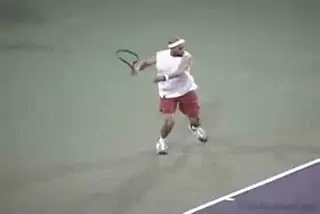
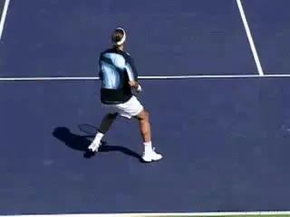

Attacking Contact Moves¶
Attacking\ Contact Moves
David Bailey

Contact Moves with the feet and can't be explained simply in terms of traditional hitting stances.
In this first article in this new series on Tennisplayer, I outlined the components of world class movement and the specific athletic skills that they are based on. link Now let's get into the movement patterns themselves and see the incredible athleticism and variety of the world's top players. And see how these patterns apply to your game.
Specifically I want to revisit my concept of the Contact Move. I introduced this concept over a decade ago and outlined its components in my first series of articles on Tennisplayer. link Over the years this work has made its way and found greater understanding and acceptance.
However, at the request of John Yandell I am offering a new and updated explanation that I hope will further the understanding of the dynamic elements in professional footwork. This understanding also has coaching implications at all levels. While many players may naturally find their way to the most efficient and effective movement patterns, others at times will need analysis and explication.
What is a Contact Move? A Contact Move is the entire pattern of movement involved in hitting a tennis ball. It includes the traditionally analyzed elements of the steps to the ball and the set up of the hitting stance.

\"Stepping down the court,\" the most basic attacking contact move.
But those factors alone are insufficient to describe what actually happens during the contact. In fact they can be misleading, for example, the idea of static hitting stances. In fact there is precise, technically critical movement with the feet after the stance set up both during and after the hit.
The players can leave the ground with one or both feet. The body can move through the air in a variety of directions. The players can land on either foot. They re-establish balance in a variety of ways. All this is prior to the start of the recovery movement.
These elements between the set up of the hitting stance and the recovery are not recognized or well understood in coaching. Yet they are equally critical in high level movement - and in movement at the club level.
If you are not familiar with these elements I hope these articles will be a revelation and possibly cause you to look with fresh eyes at strokes and movement patterns you may have felt you had mastered and understood.
In my research I have identified four categories of Contact Moves on the groundstrokes. In this article let's look first at the range Attacking Contact Moves. These include shots in which the player keeps one or both feet on the ground, and others where they launch into the air.

Two balance moves: the knee bend on a low ball, the kick back on a higher one.
The Step Down
The first Attacking Move is the Step Down. The player steps into the ball with a neutral stance, what I call \"stepping down the court.\" The contact height allows the player to keep the front foot on the ground.
Top players use the step down when they want to hit the ball on the rise, or step into a floating ball, or when the ball is short and/or low. This pattern is critical for club players to master because in general they play rally balls at mostly lower contact heights.
There are 2 Balance Moves with the step down, depending on the height of the ball. If the ball is lower, the player will drop the back knee down for balance keeping it bent and close to the court. On a higher ball the back leg comes off the court and kicks back.
The Front Foot Hop
The Front Foot Hop is aggressive because you are using your feet to attack the ball. It's basically a more explosive version of the Step Down because it is hit off forward movement.

A step into the ball, an explosion forward into the air, a front foot landing, a sideways kick back.
You use the Front Foot Hop on opportunities balls when you have the chance to move forward into the court and either finish or attack the net. The Front Foot Hop can be hit off both the forehand and backhand sides.
It can also be hit with either the one handed or two-handed backhand. It can also be used when players run around to hit forehands either inside out or inside in.
Using a Front Foot Hop, the player hits the ball with the weight on the front foot only and the rear foot off the court. As the player hits, he takes a hop forward and lands on the same foot, but in a spot forward from the take off point.
As with all contact moves, the front foot hop is paired with a corresponding balance move. As the player swings he kicks his rear leg backwards and also to the side, with the sole of the shoe pointing partially or even completely toward the sideline.
This kick back helps the player extend through the swing. It also prevents him from opening up the torso too early and/or losing balance.
The Forward Transfer
Now let's look at aggressive contact moves off open stance set up in which the player strikes the ball in the air, starting with what I call the Forward Transfer.

The Forward Transfer: contact in the air at chest level with a forward landing.
The Transfer Move is associated with a higher contact point, typical on the ATP tour where the players are regularly dealing with heavy, high bouncing incoming balls. On the Forward Transfer the contact point will be around chest level, or sometimes higher.
I call it the Forward Transfer because that is the direction the player's weight moves during the swing.
The Forward Transfer is typically used on a medium pace ball or a floating ball hit around the center of baseline. It can be hit either crosscourt or down the line. Players also typically use the Forward Transfer when they hit inside out.
From a loaded semi-open stance, the player elevates off the court before contact with the hips squaring to the net. The weight is propelled forward, moving through the shot.
The followed by a characteristic Balance Move. As the racket moves forward, the back leg \"curls\" and kicks back behind the player. The player lands on the left front foot, with the back leg pointing behind.
Typically, the front foot is pointing forward in the direction of the shot. The player then brings the rear leg around for balance and to start the recovery. This is one of the most basic Contact Move patterns in pro tennis.
Lateral Transfer

With the Lateral Transfer, the weight moves to the player's side during the landing.
A second in air contact move common in the pro game is the Lateral Transfer, again with the player elevating to hit at chest level or higher. The Lateral Transfer differs from the Forward Transfer.in the direction of the movement of the weight.
With the Lateral Transfer, the weight shift is less forward and more to the side or to the player's left. Typically players use the Lateral Transfer when they are going Inside In.
Again the players use a semi-open stance with the outside leg loaded. The player swings and explodes off the court and into the air, with the body rotation taking the left foot more across the body.
With the Forward Transfer, the front foot lands ahead of the rear and points straight ahead . With the Lateral Transfer, it lands even with the rear foot or only slightly ahead, pointing more to the sideline than forward.
The balance move is similar with a leg curl or kick back. But the leg kick back is also now more to the side. Again the rear leg comes around to reestablish balance and begin the recovery steps.

The backhand transfer: the future of aggression for two-handers?
Backhand Transfers
You commonly see Transfer footwork on the forehand, but it is used much less frequently on the backhand groundstrokes. There are some exceptions, for example Venus Williams or Elena Dementieva, who hit more open stance backhands than most players.
Although the contact point is usually lower on the backhand, the sequence is the same: open stance loading, a front foot landing, and a kick back with the rear leg.
I believe that Transfer footwork is something you will see more and more in the future on the backhand side. In my opinion, this is one way in which the game can evolve toward even more aggressive play.
The Backwards Lateral Hop
A final aggressive contact move is the Backwards Lateral Hop. In the pro game, the depth and/or height of the balls often force players to move back in the initial movement phase as they set up the hitting stance. Or they may move back to get around a short ball to hit a forehand.

The Backwards Lateral Hop: movement around the ball, rotation in the air, a left foot landing that moves slightly backwards.
Performing the Lateral Hop allows them to still hit with aggression, rather than continuing to move the weight backwards during the actual swing. As with the Transfer moves, the Backwards Lateral Hop is typically hit with both feet in the air.
Players use backwards shuffle and crossing steps to get around the ball and set up in a loaded open stance. They can then uncoil upward into the ball.
The difference with the lateral transfer is the landing is usually backwards and less to the player's left. Typically after the landing the left foot will also continue to point more forward rather than the side. Again, this contact move is paired with leg kick back as a balance move.
As with the Transfers, this contact move allows the players to rotate fully through the swing in the air. This is what makes it an aggressive contact move in its own right, even if the movement to set up is on a backwards diagonal.
So there we have our updated review of the aggressive contact moves. Let's discuss in the Forum. And stayed tuned for the next article on the Building Contact Moves!

David Bailey is a native Australian who has spent 15 years studying tennis at the professional level. He has developed a new language for one of the most complex and misunderstood aspects of the game, footwork and court movement. David has worked with world class players and coaches, national tennis associations and top academies, and has presented at coaching seminars around the world. His teaching system, the Bailey Method, has become a regular part of the coaching curriculum at the Nick Bollettierri Tennis Academy, where it is personally endorsed by Nick
Visit David's Website! [!]
To Contact David directly [!]